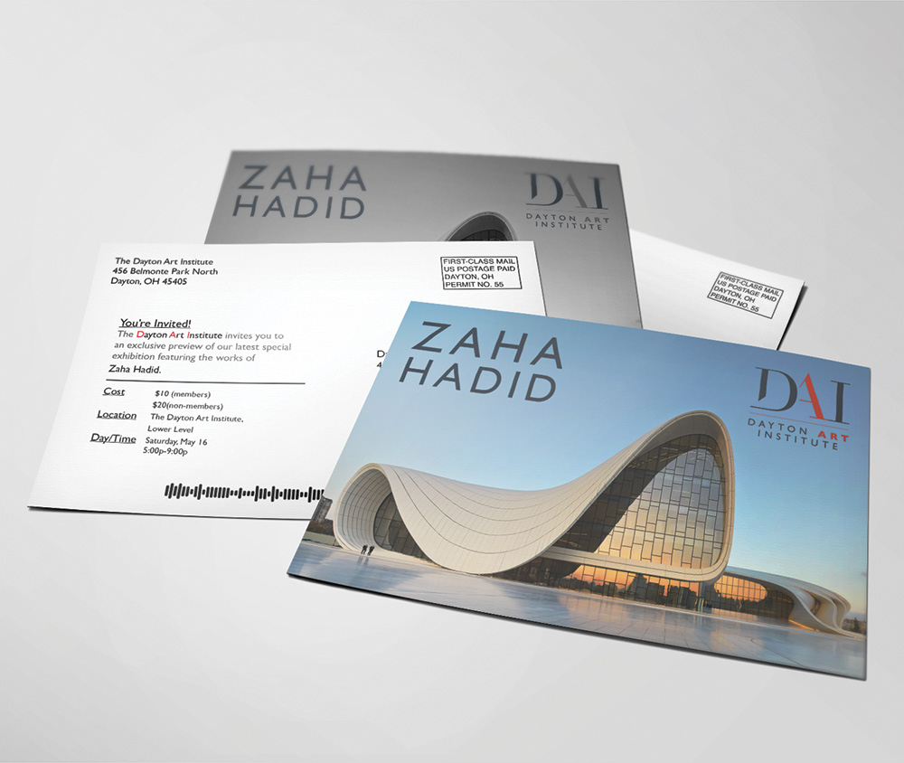
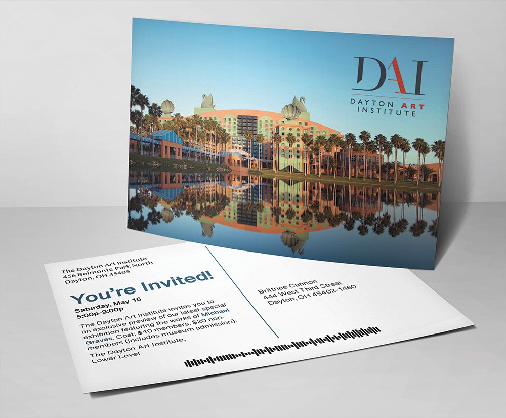
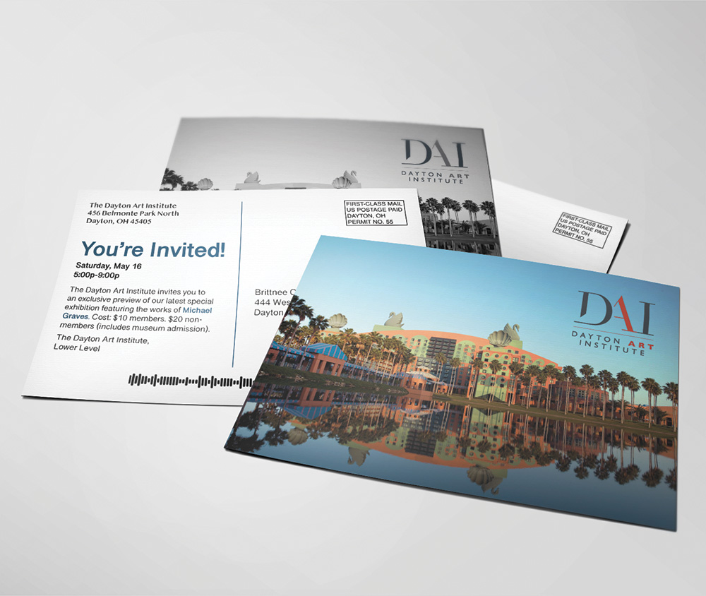
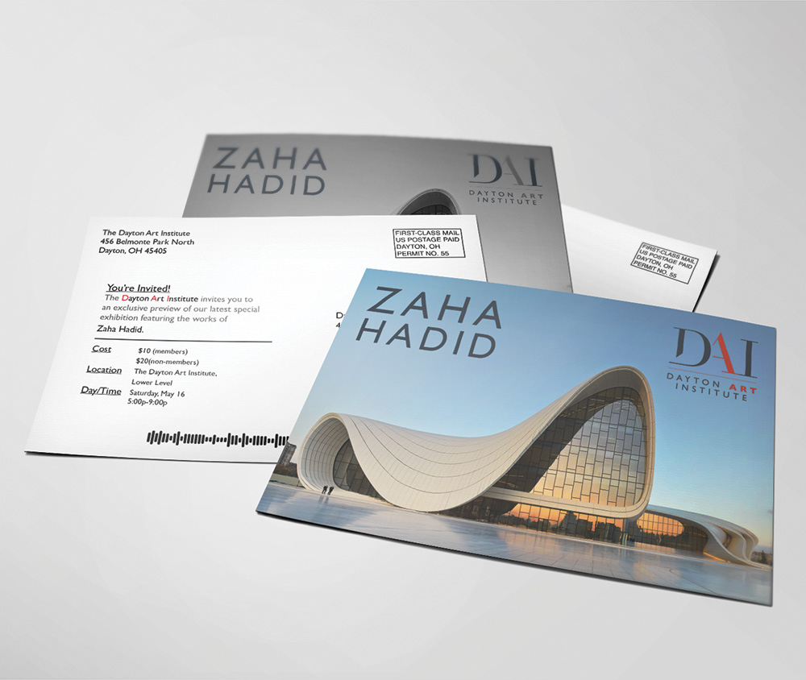
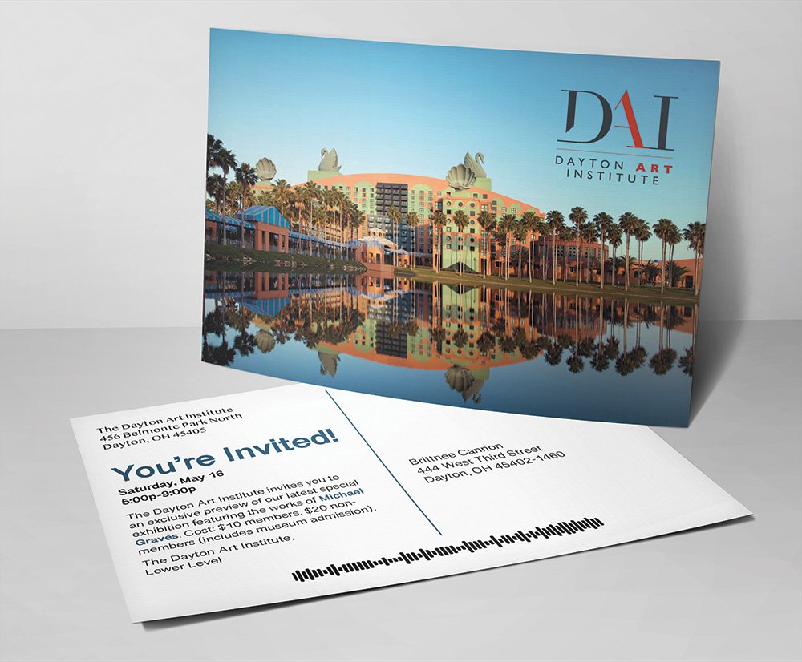
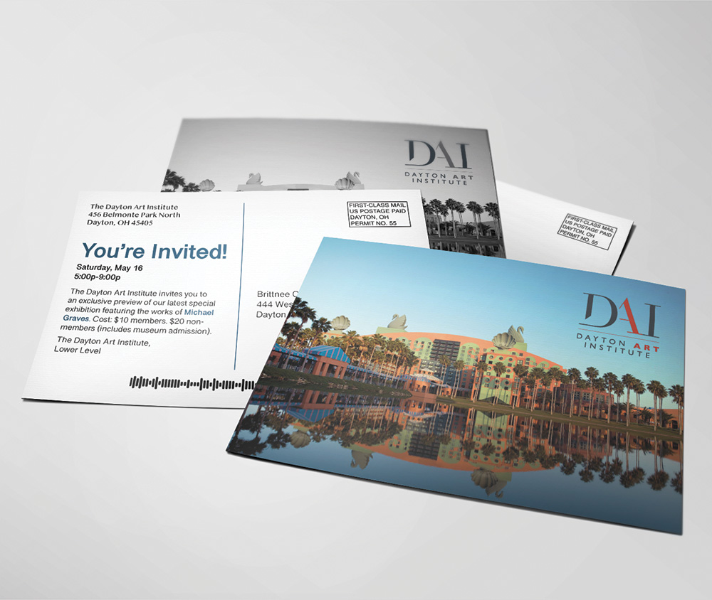

Adam J. Thompson
Dayton, OH | 937.206.3777
Student Work > Print
For this project, students were required to non-destructively edit an image in Photoshop to improve its appearance and then place it into their InDesign document.
In InDesign, they developed color and grayscale postcard invitations utilizing provided logos, postal indicia, and postal barcodes.
The postcards were printed on cardstock paper on a digital press and then cut into individual cards. Digital mock-ups were created in lieu of photographs of the final work.
 





Students created detailed illustrations based on a photo reference layer in Illustrator. Gradients and gradient mesh objects were used extensively, with the final result often requiring up to 40 hours of work.
The final illustration was used to develop a poster which included a traced logo and the make, model, and year of the vehicle.
Students created artwork based on photo reference layers in Illustrator, with an emphasis on edge accuracy versus detail. The resulting illustration was converted to tints of one PANTONE swatch of their choosing.
The final illustration was placed into InDesign where the text and logo were added. Cropped artboards were included to add abstraction, and some students chose to incorporate a second or third PANTONE spot color.
For this project, students were required to demonstrate skillful use of all three major Adobe software applications in developing a 12-page booklet design.
Students first created their text and drew thumbnail sketches for critique. Photoshop was used for retouching photos non-destructively. In Illustrator, they were tasked with pulling inspiration from their featured designer to influence a pattern design for the inside cover of the booklet.
The layout and text were created in InDesign, including three spread layouts, two pattern-filled pages, and two additional single pages. The back cover included a brief biography of their featured designer.
The final booklet design was printed to a Canon ImagePress, cut, folded, and saddle-stitched. Digital mock-ups of the booklet design (shown here) were created in Photoshop for inclusion in their first-year portfolios.